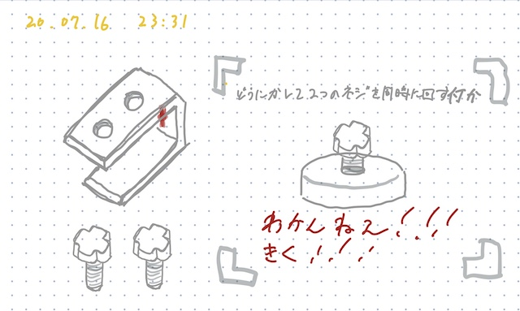

title:トートバッグ用アタッチメント
description:トートバッグを背負えるようにする装置
＜製作する目的＞
トートバッグはすぐ中身が取り出せるため便利だが、「自転車で移動する際や何か他に持つものが増えてしまった際は、バックパックの方が楽」という意見を聞き、自らが課した「小さな需要を形にし、社会的少数者の生活をより良くする」というミッションを実現できると思った。＜製作状況＞
7月9日
アイデアスケッチ作成・基本構造の決定
7月12日
データの作成及び出力
ネジでトートバッグを挟む構造を考えている。

実際に印刷したもの

7月15日
試作2号機出力構造については概ね満足な仕上がりだが、実際に使ってみないことには強度が分からない。
作業を今まで以上に早回しで進める必要がある。
〜改善点〜
タップダイスを購入し、ネジを削っていたら折れてしまった。
CuraのInfill Densityを20%で出力したためだと思われる。次は100%で出力をし直す。
7月16日
試作３号制作結構な力でひっぱっても外れないが、ネジ一本で固定しているため均等に力がかからず曲がってしまう。
支点にかかる力を分散させる仕組みと、肩紐を取り付ける部分を今日中に考える。
7月16日夜
考えはしたが、データは作れなかった。明日やる。必ず。力の分散は、ネジを2個に増やすという脳筋戦法しか思い浮かばなかった。深夜だからだろうか。
２つネジを回すのは面倒なので、同時に回せるようにする。藤岡先輩がそれらしき構造のものを作っていたので、聞いてみる。

〜〜〜〜〜〜〜〜〜〜〜〜〜〜〜〜〜〜〜〜〜〜〜〜〜〜〜〜〜〜〜〜〜〜〜〜〜〜
取り付け部分は、もっとシンプルにできると思う。
しかし、肩紐を巻き取れるようにしたいため、下の画像のような複雑な構造になってしまった。
にしてももっとシンプルにできると思うので、明日考える。

＜今後の流れ＞
~7/19 肩紐取り付け部分の構造についての思索及び3Dデータの作成~7/20 試作４号制作・改善点の模索 ~7/30 細かい修正・実際に使用できるレベルまで磨きをかける